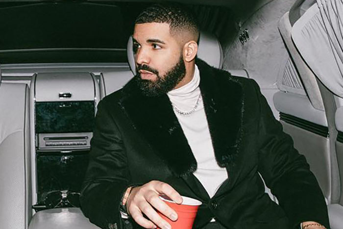
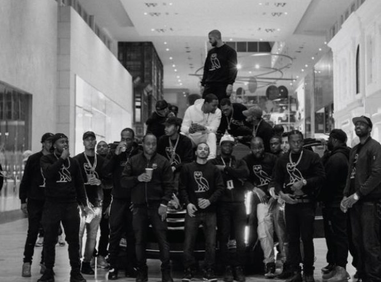
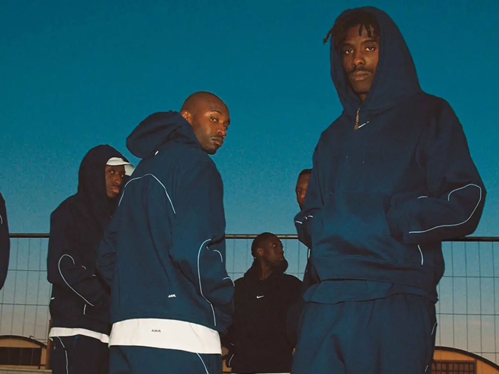

¿Quien és Drake?
Drake (Aubrey Drake Graham) Es un artista dedicado especialmente a la música del género rap/trap, aunque también ha hecho canciones de otros géneros: R&B, reggaeton y drill entre otros.
Además de tener una carrera musical, también se dedica al sector de la moda con sus marcas de ropa y las colaboraciones que hace.
Marcas de ropa
OVO: OVO o October's Very Own Es una marca de ropa fundada por Drake en 2011 junto a su discografía con el mismo nombre (OVO Sound)
Nocta: Nike Nocta ha sido la última marca de ropa que Drake a creado, colaborando con Nike para crear diseños exclusivos.
Récords y premios
Récords: Drake a lo largo de su carrera a conseguido muchos récords, uno de los más importantes es que consiguió tener 100 canciones entre las 20 principales del Hot 100. Con esto consiguió romper el récord de los Beatles que nadie superó por 55 años.
Premios: También a conseguido 192 premios y a sido nominado 382 veces.